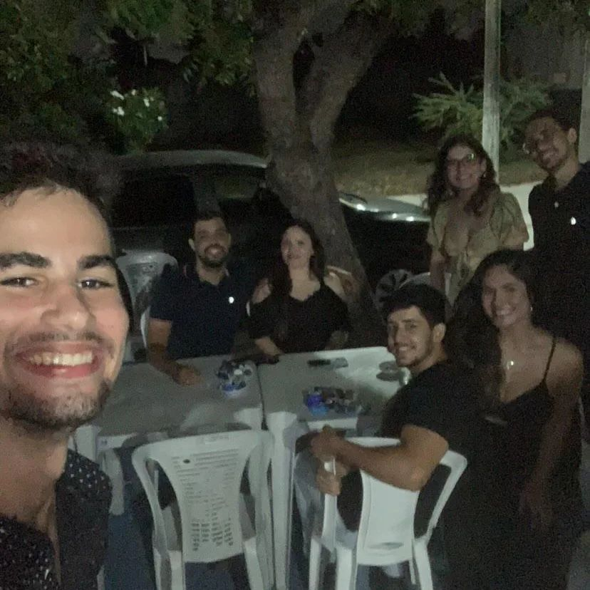

Feliz 90 anos vozão! ❤
--------------
Quem diria que um simples trabalhador nos anos 90, analfabeto, de Boa Viagem, conseguiu impactar gerações e gerações (de forma positiva, é claro, rs).
Este é meu avô, seu José Ferreira que aprendeu a ler sozinho e não tinha riquezas, mas tinha força de vontade e inteligência de sobra.
A vida inteira ele foi comerciante, tudo que ele ganhava investia, nunca teve poupança.
Começou como servente, depois pedreiro, barbeiro, dono de mercearia, açougue, motorista de táxi, calçeteiro, dono de fábrica de alumínio (meu pai trabalhava com ele e os irmãos do meu pai também), criou várias sorveterias em São Luís, etc.
Através dessa sua força conseguiu formar uma família grande de 8 filhos, adquirir terrenos e deu a melhor educação para seus filhos.
Vou recordar uma história incrível que meu pai contou sobre ele, que Inclusive é uma lição de vida:
Ele tinha um caminhão, e vendeu as coisas que ele tinha pra comprar de gado e trazer pra vender em Fortaleza. Após ele vender tudo, roubaram todo seu dinheiro e ele voltou pra Boa Viagem.
No mesmo dia, em sua casa, ele estava fazendo alguma coisa e estava assoviando (ele tinha o costume de sempre assoviar), minha vó fez a pergunta pra ele:
- "Homem o que tu tem? Acabaram de roubar tudo o que tu tem e tu ta aí assoviando? "
E ele respondeu:
- " sim e eu vou fazer o que? Vou trabalhar pra ganhar outro."
OBS: E ganhou muito mais, tudo que ele tem hoje foi adquirido depois desse fato.
O cara é um monstro (no bom sentido), ganhou até uma rua em seu nome (Rua José Ferreira no Eusébio)
Sempre muito amoroso com todos, muito carinhoso.
E que venham mais datas assim 🎊
Por Elias Evangelista Ferreira
Publicado em seu Instagram - eliasef_
https://www.instagram.com/p/C2swNyQgrJu/
Em 19 de janeiro de 2024
